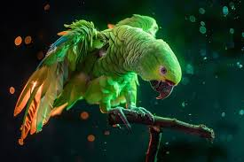
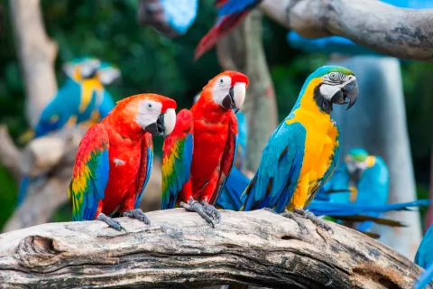

¿Qué son los Loros?
Los loros son aves fascinantes que pertenecen al orden Psittaciformes. Son conocidos por su inteligencia y su capacidad para imitar sonidos. Estas aves tienen una amplia gama de colores y tamaños, lo que las hace únicas en el reino animal.
Características Generales
- Tamaño: Desde pequeñas especies de 10 cm hasta grandes guacamayos de más de 1 metro.
- Plumaje: Colores vibrantes como verde, azul, rojo y amarillo. Distribución: Son nativas de América, África, Asia y Oceanía.
¿Por qué aprender sobre los Loros?
Estudiar los loros no solo es fascinante, sino crucial para su conservación y comprensión del medio ambiente. Estas aves juegan un rol importante en los ecosistemas al dispersar semillas y polinizar plantas.
Video sobre los Loros

